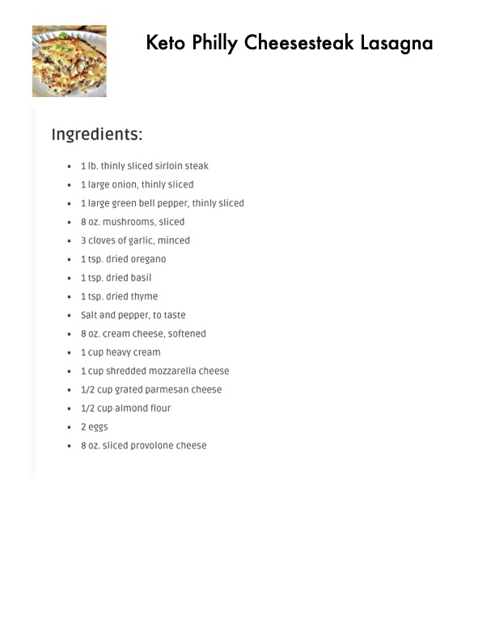

Keto Philly Cheesesteak Lasagna

Original cookbook page 528
Ingredients
- Ib. thinly sliced sirloin steak
- large onion, thinly sliced
- large green bell pepper, thinly sliced
- 8 0z. mushrooms, sliced
- 3 cloves of garlic, minced
- tsp. dried oregano
- tsp. dried basil
- tsp. dried thyme
- Salt and pepper, to taste
- 8 0z. cream cheese, softened
- cup heavy cream
- cup shredded mozzarella cheese
- /2 Cup grated parmesan cheese
- /2 cup almond flour
- 2 eggs
- 8 oz. Sliced provolone cheese
Instructions
- thinly sliced sirloin steak
- ilarge green bell pepper, thinly sliced = 80z.
- mushrooms, sliced
Recipe #528 from collection